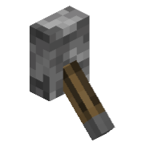
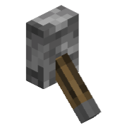

Генетический алгоритм — это эвристический метод оптимизации, вдохновленный принципами естественного отбора и генетики.
Он применяется для решения сложных задач, таких как задача коммивояжёра (TSP), которая заключается в поиске кратчайшего замкнутого маршрута,
проходящего через все города ровно один раз.
Инструкция
1. Разместите города на карте
2. Запустите алгоритм
2.1 Вы можете добавлять города во время работы алгоритма
Для того, чтобы найти минимальный путь, вы должны разместить хотя бы 2 города.
 AlgoBox

AlgoBox
